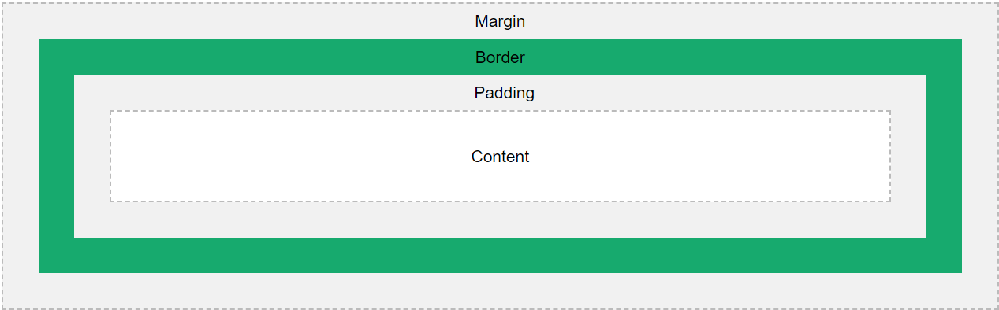
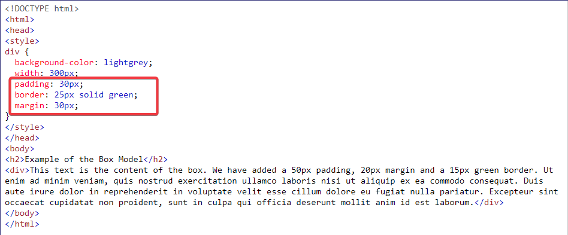
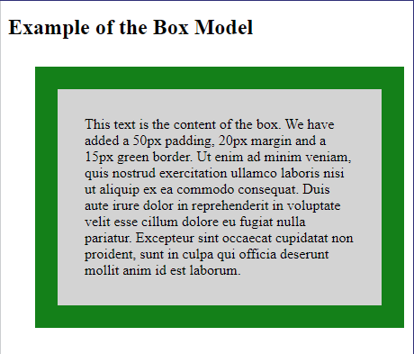

What is the difference between Margin, Border, and Padding?
By usinging at the CSS Box Model, we can easily explaing the difference between Margin, Border, and Padding.
The CSS box model is essentially a box that wraps around every HTML element. It consists of: margins, borders, padding, and the actual content. The image below illustrates the box model:
-
Explanation of the different parts:
- Content is the most inner part, which is like a text box containing the actual content of the element.
- Padding is the space between the border of an element and the content inside it.
- Border is the line between the margin and padding of an element. It's only counted when given an actual width otherwise, it's zero.
- Margin is the space which is around an element.
Below is an simple examle in practical use:


The box model allows us to add a border around elements, and to define space between elements.